화재감식평가기사 (2022-04-24 기출문제)
1과목: 화재조사론
1. 소방기본법령상 화재원인조사의 조사범위가 아닌 것은?
- 소방활동 중 발생한 사망자 및 부상자
- 피난경로, 피난상의 장애요인 등의 상황
- 화재의 연소경로 및 확대원인 등의 상황
- 화재가 발생한 과정, 화재가 발생한 지점 및 불이 붙기 시작한 물질
(정답률: 84%)

2. 메탄 40vol%, 에탄 30vol%, 프로판 30vol%으로 혼합되어 있는 기체의 공기 중 폭발하한계(vol%)는?
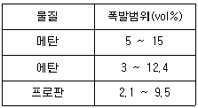
- 약 2.5
- 약 3.1
- 약 4.3
- 약 5.7
(정답률: 71%)
3. 콘크리트 박리(spalling)에 관한 설명으로 틀린 것은?
- 콘크리트 등에 포함된 수분이 열에 의해 팽창하면서 시멘트를 부서지게 만든다.
- 콘크리트 내의 강철재의 팽창은 둘러싸고 있는 콘크리트를 파괴한다.
- 콘크리트, 회벽, 벽돌 면이 깨지거나 부서진 것을 말한다.
- 시멘트 내의 폴리프로필렌 섬유는 압력을 견디지 못하고 화재 폭발 시 녹아 박리를 크게 한다.
(정답률: 69%)
4. 가연성 물질에 관한 설명으로 옳은 것은?
- 주기율표의 0족 원소
- 산소와 충분히 화합한 물질
- 산소와 흡열반응을 하는 물질
- 산소와 반응 시 발열량이 큰 물질
(정답률: 77%)
5. 습기가 있는 상태에서 과산화나트륨과 혼촉 시 발화가 일어나지 않는 것은?
- 톱밥
- 산화칼슙
- 유황
- 알루미늄 분말
(정답률: 59%)
6. 화재조사 시 발화지점의 가설에 대해 사고실험을 통해 분석적으로 검증하는 방법은?
- 연역적 추론
- 귀납적 추론
- 주관적 추론
- 객관적 추론
(정답률: 55%)
7. 화재 진화 후 화재조사활동 순서를 바르게 나열한 것은?
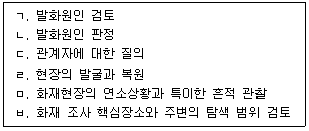
- ㅁ→ㄷ→ㅂ→ㄹ→ㄱ→ㄴ
- ㅁ→ㅂ→ㄷ→ㄱ→ㄹ→ㄴ
- ㅂ→ㄷ→ㅁ→ㄹ→ㄱ→ㄴ
- ㅂ→ㅁ→ㄷ→ㄱ→ㄹ→ㄴ
(정답률: 43%)
8. 220V, 2A가 전선에 1분간 전기가 인가되었을 때 저항에 발생하는 열량(cal)은?
- 1⑤.6
- 440
- 6336
- 26400
(정답률: 51%)
9. 다음 중 분진폭발의 위험이 가장 낮은 것은?
- 강철 분말
- 티타늄 분말
- 생석회 분말
- 알루미늄 분말
(정답률: 77%)
10. 화염확산속도에 영향을 미치지 않는 것은?
- 연료의 밀도
- 연료의 비열
- 연료의 하중
- 연료의 온도(화염온도범위 외)
(정답률: 57%)
11. 연소반응에 있어서 산소공급원의 역할을 하는 물질은?
- 황린
- 칼륨
- 과산화나트륨
- 디에틸에테르
(정답률: 73%)
12. 화재현장 조사계획 수립 단계에 해당하지 않는 것은?
- 경찰 등 관계기관 연락
- 조사의 방법, 책임자 선정 및 임무분담
- 소훼된 부분에 대해 집중적으로 현장 감식
- 화재현장의 상황 및 특성에 적합한 조사과정의 수립
(정답률: 76%)
13. 폭굉유도거리에 관한 설명으로 틀린 것은?
- 압력이 낮을수록 폭굉유도거리는 짧아진다.
- 정상연소속도가 큰 혼합가스일수록 폭굉유도거리는 짧아진다.
- 관지름이 작을수록 폭굉유도거리는 짧아진다.
- 점화원의 에너지가 클수록 폭굉유도거리는 짧아진다.
(정답률: 49%)
14. 고체의 연소현상 중 훈소와 표면연소에 관한 설명으로 옳은 것은?
- 담배의 연소는 표면연소의 대표적인 예이다.
- 훈소와 표면연소는 화염이 없이 타는 외관적 형태를 보인다.
- 표면연소는 훈소에 비하여 많은 연기가 발생한다.
- 숯은 산소와 온도 조건이 맞으면 화염으로 연소할 수 있다.
(정답률: 47%)
15. 소방기본법령상 화재의 조사에 관한 설명으로 틀린 것은?
- 소방청장, 소방본부장 또는 소방서장은 화재조사를 하기 위하여 필요 시 관계인에게 보고 또는 자료 제출을 명할 수 있다.
- 소방청장, 소방본부장 또는 소방서장은 관계 공무원으로 하여금 관계 장소에 출입하여 화재의 원인과 피해의 상황을 조사하거나 관계인에게 질문하게 할 수 있다.
- 화재조사를 하는 관계 공무원은 관계인의 정당한 업무를 방해하거나 화재조사를 수행하면서 알게 된 비밀은 다른 사람에게 누설하여서는 아니 된다.
- 소방청장, 소방본부장 또는 소방서장은 수사기관이 방화(放火)의 혐의가 있어서 이미 피의자를 체포하였을 때 피의자에 대한 조사 권한이 없으므로 수사기관에 수사 의뢰한다.
(정답률: 82%)
16. 소방기본법령상 거점소방서를 포함한 소방본부의 화재조사전담부서에 갖추어야 할 화재조사 장비 및 시설 중 감식·감정용 기기가 아닌 것은?
- 실체현미경
- 거리측정기
- 절연저항계
- 적외선열상카메라
(정답률: 50%)
17. 개구부를 통한 화재확산 메커니즘이 아닌 것은?
- 복사열에 의한 점화
- 불씨가 이동하여 점화
- 직접적인 화염에 의한 점화
- 장애물을 통한 열전도에 의한 점화
(정답률: 66%)
18. 건축물의 구획된 공간에서 플래시오버가 발생하면 고온 연기층으로부터 바닥으로 방사되는 복사열유속(kW/m2)은?
- 약 10kW/m2
- 약 20kW/m2
- 약 30kW/m2
- 약 40kW/m2
(정답률: 56%)
19. 플래시오버 현상과 백드래프트 현상을 비교한 설명으로 옳은 것은?
- 연소속도를 살펴보면 플래시오버에 비하여 백드래프트의 연소속도가 더욱 빠르다.
- 현상 발생 전 가연성 기체의 온도는 플래시오버의 경우 인화점 이상, 백드래프트의 경우 인화점 이하이다.
- 구획실 내에서 산소가 충분할 때 플래시오버와 백드래프트가 발생한다.
- 현상의 발생단계를 비교하면 플래시오버는 자연연소단계에서 성화기로 전환되는 사이에서 발생하며 백드래프트는 자유연소단계와 성화기 이후에 발생한다.
(정답률: 46%)
20. 화재현장 발굴 시 주의사항으로 틀린 것은?
- 발굴지역의 경계구역을 설정한다.
- 낙하물 등을 우선 제거하여 안전을 확보한다.
- 가급적 삽과 같은 큰 장비를 사용하여 발굴시간을 단축한다.
- 상층부에서 하층부로 발굴을 하며 수작업을 원칙으로 한다.
(정답률: 83%)
2과목: 화재감식론
21. 프로판(C3H8)가스의 물성값으로 옳은 것은?
- 발화점은 약 150℃
- 기체 비중은 약 0.95
- 임계온도는 약 –96.8℃
- 연소범위는 약 2.1 ~ 9.5vol%
(정답률: 56%)
22. 0℃ 얼음 1kg을 100℃ 수증기로 변환할 경우 필요한 열량(kJ)은?
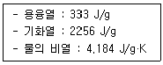
- 418.4
- 751.4
- 2674.4
- 3007.4
(정답률: 34%)
23. 유지류의 자연발화가 용이하게 발생할 수 있는 조건이 아닌 것은?
- 표면적이 작다.
- 주변의 온도가 높다.
- 산소의 공급이 원활하다.
- 다공성 물질에 흡습되었다.
(정답률: 62%)
24. 산불방향지표 중 후진성 산불의 특징으로 틀린 것은?
- 확산속도가 빠르다.
- 화염의 길이가 짧다.
- 거시적인 지표보다 미시적인 지표가 많이 발견된다.
- 경사가 있는 지형에서 하향으로 내려오는 경우가 많다.
(정답률: 58%)
25. 무염(훈소)화재에 관한 설명으로 틀린 것은?
- 발화 메커니즘은 '접촉→훈소→축열→착염→출화과정'을 거친다.
- 유독가스가 생성되며, 화염을 동반한다.
- 다공성 고체가연물, 혼합연료, 불침윤성 고체에서 발생될 수 있다.
- 고체가연물과 산소 사이에 반응이 상대적으로 느린 연소이며 반응이 산소가 고체표면으로 확산되면서 일어나고 표면은 적열 및 탄화가 진행된다.
(정답률: 69%)
26. 직접착화에 의한 방화원인 감식에 관한 사항으로 틀린 것은?
- 독립적 발화 개소 여부를 확인한다.
- 화재당시 사람의 출입 여부를 확인하고 내부 또는 외부 소행인지 확인한다.
- 화재 전에 없던 가연물이 연소한 흔적이 있거나 물건의 위치가 변경되었는지 확인한다.
- 스위치로부터 전열기구로 가는 회로를 찾아 스위치와 전열기구와의 관계를 규명한다.
(정답률: 69%)
27. 항공기 화재의 특징으로 틀린 것은?
- 항공기 화재 조사 시 공간협소성, 고밀집성 등 다양한 특성을 고려해야 한다.
- 항공기가 단시간에 화재에 둘러싸이고 주변 일대의 가연성 물질에 급격히 전파된다.
- 상공에서 항공기 화재가 발생한 경우 지상까지 화재가 확산될 가능성은 전혀 없다.
- 항공기 인화성이 높은 연료를 대량으로 탑재하고 있어 추락사고가 발생하면 폭발적으로 연소할 수 있다.
(정답률: 76%)
28. 화재 및 폭발의 사고조사 시 고려해야 할 사항으로 틀린 것은?
- 구획된 실내공간에서 가스폭발이나 분진 폭발이 일어난 경우에는 폭심부가 명확하다.
- 폭발로 인하여 비산된 파편에 그을음의 부착여부를 가지고 화재와 폭발의 선후 관계를 알 수 있다.
- 비닐, 스티로폼 등 열에 쉽게 변형되는 물질의 열변형 흔적으로부터 폭발과 화재의 선후관계를 알 수 있다.
- 비닐, 스티로폼, 종이 등의 열변형 흔적으로부터 화학적폭발과 물리적폭발을 구분할 수 있다.
(정답률: 46%)
29. 가스용기와 안전밸브 종류의 연결이 옳은 것은?
- 산화에틸렌 용기 – 파열판식 안전밸브
- 수소 압축가스용기 - 파열판식 안전밸브
- 아르곤 압축가스용기 - 스프링식 안전밸브
- LPG 용기 – 스프링식과 파열판식의 2중 안전밸브
(정답률: 49%)
30. 화재 현장조사 시 조기발견자로부터 획득할 수 있는 정보와 관계가 가장 적은 것은?
- 발견시각
- 발화원인
- 발견위치
- 불의 위치
(정답률: 75%)
31. 전기다리미에 200v의 전압을 가했더니 3A의 전류가 흘렀다. 이때 전기다리미가 소비하는 전력(W)은?
- 150
- 300
- 400
- 600
(정답률: 72%)
32. 선박 추진시스템에 관한 설명으로 옳은 것은?
- 인보드 엔진에는 기화기가 장착되어 있거나 연료분사 시스템이 있는 2사이클 또는 4사이클 가솔린 엔진이 포함된다.
- 인보드 가솔린엔진의 연료탱크에 대한 모든 부속품은 탱크의 윗부분에 있어야 하며, 연료 라인도 탱크보다 높게 있어야 한다.
- 2사이클 엔진의 시스템 기본 원칙은 자동차 엔진과 유사하고 아웃보다 엔진에서 연료는 펌프가 있는 고압연료 전달시스템을 통해 전달된다.
- 아웃보드 엔진의 4사이클 엔진은 연료와 오일 혼합물을 사용하며 오일이 가솔린과 미리 혼합되거나 별도의 저장소에 있다가 연료와 자동적으로 혼합되는 방식으로 사용된다.
(정답률: 45%)
33. 방화의 일반적인 특징에 관한 설명으로 틀린 것은?
- 음주를 한 후 실행하는 경우가 많다.
- 우발적인 경우는 없고 모든 방화는 계획적이다.
- 방화범은 단독범행이 많고 인적이 드문 야간이나 심야에 많이 발생한다.
- 가솔린, 신나 등 인화성물질을 매개체로 사용한다.
(정답률: 74%)
34. 차량 화재조사를 위해 수집해야 할 자료로 거리가 가장 먼 것은?
- 과거의 수리기록
- 화재 조기발견자의 진술
- 차량 정비 기록부 및 리콜 정비 유무
- 피해 차량 운전자의 운전 경력 증명서
(정답률: 75%)
35. 초기 가연물에 대한 설명으로 틀린 것은?
- 초기 가연물은 오작동하거나 고장난 장치의 일부일 수 있다.
- 초기 가연물은 열을 발생시키는 장치에 너무 가까이 있는 물체일 수 있다.
- 화재를 유발한 사건을 이해하기 위해 초기 가연물을 확인하는 것이 중요하다.
- 표면 대 질량 비율이 낮은 비-기체 가연물은 표면 대 질량 비율이 높은 가연물보다 훨씬 쉽게 발화한다.
(정답률: 72%)
36. 유염연소와 무염연소에 관한 설명으로 틀린 것은?
- 무염연소는 연소반응속도가 느리다.
- 무염연소는 발열량이 작고, 유염염소는 발열량이 크다.
- 목재의 무염연소 시 가연물의 내부보다는 표면으로 전파되는 속도가 빠르다.
- 무염연소는 고체가연물에서만 가능하다.
(정답률: 48%)
37. LPG 차량의 구성 부품 중 LPG 봄베의 밸브 색상에 대한 설명으로 옳은 것은?
- 충전밸브 : 적색
- 액체 송출밸브 : 적색
- 기체 송출밸브 : 청색
- 충전, 액체 송출, 기체 송출 밸브 : 청색
(정답률: 59%)
38. 가연성 액체의 인화점에 관한 설명으로 옳은 것은?
- 가연성 액체가 발화하는 최저온도
- 가연성 액체의 증기가 공기와 접촉하여 점화원 없이 연소되는 최고온도
- 가연성 액체에 착화되기 충분한 증기를 발생하는 최저온도
- 가연성 액체의 증기가 포화상태에 달하는 최저온도
(정답률: 48%)
39. 산불의 종류로 틀린 것은?
- 지표화
- 수간화
- 비산화
- 수관화
(정답률: 60%)
40. 화재현장에서 발견된 선풍기의 감식사항으로 추정할 수 없는 것은?
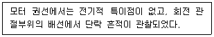
- 통전 중이었음을 확인할 수 있다.
- 반단선에 의한 화재 가능성이 있다.
- 전선 공극에 의한 아크를 추정할 수 있다.
- 모터의 구속 운전에 의한 발화가능성이 있다.
(정답률: 56%)
3과목: 증거물관리 및 법과학
41. 잔류물이 있는 용기에 상부공간에 숯(Charcoal)을 매달아 촉진제를 추출하는 방법은?
- 흡착법
- 상부공간법
- 용매추출법
- 증기증류법
(정답률: 61%)
42. 액체가연물의 연소에 의한 화재패턴이 아닌 것은?
- 포어 패턴
- 도넛 패턴
- 스플래시 패턴
- U자 모양 패턴
(정답률: 65%)
43. 화재 증거물 검증에 관한 설명으로 옳은 것은?
- 검증하는 단계는 모든 가설을 검증하여, 모든 가설이 사실과 과학적 원리에 부합할 때까지 계속되어야 한다.
- 연역적 추론에 의한 검증 단계를 통과한 가설이 없는 경우에는 이 문제를 해결된 것으로 간주하여야 한다.
- 화재원인 재현실험을 통해서 물리적으로 검증될 수도 있고, 사고실험에서 과학적 원리를 적용하여 분석적으로 검증될 수도 있다.
- 증거가 증명될 수 있는 경우라도 다른 방법으로 반드시 검증하여야 하며, 여기에는 새로운 증거물 수집이나 기존 증거물에 대한 재분석이 필요할 수도 있다.
(정답률: 45%)
44. 화재현장 보존을 위한 조치사항으로 틀린 것은?
- 잔불 정리를 위해 현장 물건을 과도하게 변형하거나 이동되지 않도록 한다.
- 발화원 등의 연소잔해가 있는 방향에는 직수 소화에 의한 증거물 파괴를 피한다.
- 현장진입을 위해 개방하고자 하는 출입문이나 창문에서 파괴흔적 발견 시 화재조사관에게 알려야 한다.
- 현장에서 석유류의 연료를 사용하는 장비 사용 시 재급유는 현장 내에서 실시하도록 한다.
(정답률: 70%)
45. 물적 증거로서의 화재패턴에 관한 설명으로 옳은 것은?
- V패턴이나 포인터 및 화살패턴은 환기에 의해 형성되는 패턴이다.
- 엘리게이터(alligator) 탄화는 발화 중에 액체 위험물 촉진제가 사용되었다는 증거이다.
- 정상연소에서 화재패턴을 형성하는 화재플룸의 온도는 발화구획설 코너에서 가장 높다.
- 발화원이 확인되지 않은 완전연소 패턴구역의 식별에서 화재확산 방향이나 연소시간 또는 강도의 차이 규명을 위해 활용할 수 있는 화재패턴은 보호구역 및 열그림자이다.
(정답률: 40%)
46. 화재현장을 촬영하는 위치에 관한 설명으로 옳은 것은?
- 카메라는 가능하면 수직으로만 촬영한다.
- 피사체가 냉장고일 경우 여러 방향으로 촬영한다.
- 촬영방향은 발화부로 추정되는 곳의 앞면을 집중적으로 촬영한다.
- 촬영된 사진은 화재조사자를 위한 자료이므로 촬영위치는 조사자의 재량에 달려 있다.
(정답률: 68%)
47. 화재 열로 파손된 유리의 특징으로 옳은 것은?
- 리플마크가 형성된다.
- 거미줄 형태로 파손된다.
- 방사형 형태로 깨진다.
- 구불구불한 불규칙한 형태로 깨진다.
(정답률: 56%)
48. 화재현장 사진 및 비디오 촬영에 관한 사항으로 틀린 것은?
- 화재조사의 진행 순서에 따라 촬영한다.
- 화재현장의 증거 확보를 위하여 필요하다.
- 화재조사관의 오랜 경험에 의존하여 촬영여부를 결정해야 한다.
- 방화, 실화 수사의 기초자료로 사용하기 위하여 필요하다.
(정답률: 72%)
49. 액체 촉진제의 특성에 대한 설명으로 옳은 것은?
- 촉진제는 액체 상태로만 발견된다.
- 액체 촉진제는 대부분의 내부 마감재 및 기타 화재 잔해에 쉽게 흡수된다.
- 모든 액체 촉진제는 물과 접촉했을 때 물 아래로 가라앉는다.
- 액체 촉진제가 다공성 물질에 흡수되었을 때는 잔존 가능성이 매우 낮다.
(정답률: 59%)
50. 화재증거물수집관리규칙상 증거물 시료용기가 아닌 것은?
- 유리병
- 아크릴 병
- 양철 캔(CAN)
- 주석 도금 캔(CAN)
(정답률: 63%)
51. 증거수집 과정에서 증거물의 오염 방지를 위한 조치사항으로 틀린 것은?
- 새 증거물 보관용기는 기존에 사용되었던 용기와 오염지역에서 떨어진 곳에 보관하여야 한다.
- 증거물 보관 용기 자체를 수집 도구로 사용하는 것은 증거물 오염이 될 수 있으므로 사용을 금지한다.
- 수집 장소에서 증거물을 담을 때에만 용기를 개봉하고 증거물을 담은 후에는 실험실에서 조사를 할 때까지 계속 봉인되어 있어야 한다.
- 상호 교차 오염을 방지하기 위해 화재조사관은 액체나 고체 촉진제 중 증거물을 수집할 때 일회용 비닐장갑을 착용하고 작업하는 것이 효과적이다.
(정답률: 66%)
52. 화재현장에서 화면의 일부만을 측광하는 방식으로 주 피사체의 정확한 노출을 측광할 수 있으며 역광 촬영 시 사용되는 방식은?
- 스팟측광
- 평균측광
- 다분할 측광
- 중앙부 중점 측광
(정답률: 73%)
53. 화재로 인한 3도 화상에 관한 설명으로 틀린 것은?
- 수포주위에 홍반을 보이며, 혈액침하가 일어나더라도 홍반만 남는다.
- 신경섬유가 파괴되어 통증이 없거나 미약할 수 있다.
- 피하지방을 포함한 피부의 전층이 손상된 경우로 심한 경우 근육, 뼈, 내부 장기도 포함되는 경우가 있다.
- 부스럼 딱지 또는 생체 내의 피부조직이나 세포가 죽는 응고성 괴사에 빠지므로 괴사성 화상이라고도 한다.
(정답률: 60%)
54. 질문기록서 작성을 위하여 관계자의 진술을 녹음하려고 할 때 유의사항으로 틀린 것은?
- 유도심문을 피한다.
- 관계자에게 녹취내용을 확인시키고 서명을 하게 한다.
- 관계자의 진술은 화재발생 직후보다 화재 진압 후 시간이 경과한 뒤 실시하는 것이 좋다.
- 18세 미만의 청소년에게 질문을 하는 경우는 친권자 등을 반드시 입회시켜야 하며 진술자는 물론 입회자에게도 서명을 받도록 한다.
(정답률: 71%)
55. 인화성 액체, 부유물을 가진 액체, 시험 조건에서 표면 막을 형성하기 쉬운 액체, 40℃~370℃의 온도범위를 가지는 기타 액체의 인화점을 시험하는 방법은?
- 태그 개방컵 테스트
- 태크 밀폐컵 테스트
- 클리브랜드 개방컵 테스트
- 펜스키-마텐스식 밀폐컵 테스트
(정답률: 40%)
56. 일산화탄소 중독사의 대표적인 특징은?
- 선홍색 시반이 나타난다.
- 수포주위에 홍반이 생긴다.
- 코에서 출혈이 심하게 나타난다.
- 피부의 세포조직이 검게 타는 탄피층이 형성된다.
(정답률: 71%)
57. 법정 증언의 자세로 가장 적절하지 않은 것은?
- 차분한 마음상태를 유지한다.
- 사실적이고 객관적으로 답변한다.
- 사투리, 속어 등의 단어를 피한다.
- 질문에 관계없이 빠르게 답변한다.
(정답률: 74%)
58. 화재현장에서 발견된 사망한 사체에 관한 설명으로 틀린 것은?
- 일산화탄소를 흡입한 것으로 화재 당시 생존해 있었음에 대한 증거가 될 수 있다.
- 눈가의 주름 사이에 그을음이 부착되지 않은 것은 화재 당시 사망한 상태였다는 증거가 될 수 있다.
- 일산화탄소가 헤모글로빈과 결함함으로써 체내 산소의 공급이 차단되어 사망했을 가능성이 있다.
- 기도, 폐 등의 호흡기에서 발견되는 그을음은 화재 당시 생존해 있었음을 나타내는 증거가 될 수 있다.
(정답률: 60%)
59. 화재증거물수집관리규칙상 증거물 보관 및 이동에 관한 설명으로 틀린 것은?
- 증거물의 보관은 파손될 우려가 없는 장소에 보관해야 한다.
- 증거물의 보관 및 이송은 장소, 방법, 책임자 등이 지정된 상태에서 행해져야 한다.
- 증거물은 어떠한 경우라도 폐기할 수 없으며, 화재증거수집의 목적달성 후에는 관계인에게 반환하여야 한다.
- 증거물 보관 시 화재조사의 관계없는 자의 접근은 엄격히 통제되어야 하며, 보관관리 이력을 작성하여야 한다.
(정답률: 71%)
60. 화재증거물수집관리규칙상 현장사진 및 비디오 촬영 시 유의사항으로 틀린 것은?
- 최초 도착하였을 때의 현장 정리정돈 후 촬영한다.
- 화재상황을 추정할 수 있는 증거물, 피해물품, 유류의 형상은 면밀히 관찰 후 자세히 촬영한다.
- 증거물을 촬영할 때는 그 소재와 상태가 명백히 나타나도록 하며, 필요에 따라 구분이 용이하게 번호표 등을 넣어 촬영한다.
- 화재현장의 특정한 증거물 등을 촬영함에 있어서는 그 길이, 폭 등을 명백히 하기 위하여 측정용 자 또는 대조도구를 사용하여 촬영한다.
(정답률: 70%)
4과목: 화재조사보고 및 피해평가
61. 화재조사 및 보고규정상 화재증명원의 발급에 관한 사항으로 ( )에 알맞은 내용은?
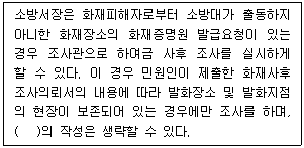
- 화재현황조사서
- 화재피해조사서
- 화재현장조사서
- 화재현장출동보고서
(정답률: 63%)
62. 화재조사 및 보고규정상 다음 건물의 소실면적(m2)은?
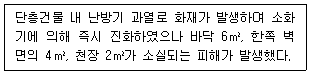
- 2
- 4
- 6
- 10
(정답률: 48%)
63. 화재조사 및 보고규정상 화재의 유형에 명시되지 않은 것은? (단, 기타화재는 제외한다.)
- 전기·화학 화재
- 건축·구조물 화재
- 선박·항공기 화재
- 자동차·철도차량 화재
(정답률: 68%)
64. 화재조사 및 보고규정상 명시된 연소확대물의 정의로 옳은 것은?
- 지속적인 연소현상에 영향을 준 인적·물적·자연적인 가연물을 말한다.
- 연소가 확대되는데 있어 결정적 영향을 미친 가연물을 말한다.
- 가연물질에 지속적으로 불이 붙는 가연물을 말한다.
- 발화관련 기기나 제품을 작동 또는 연소시킬 때 사용되어진 연료 또는 에너지를 말한다.
(정답률: 63%)
65. 화재조사 및 보고규정상 명시된 조사결과 보고에 관한 사항으로 ( )에 알맞은 기준은?
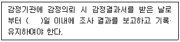
- 7
- 10
- 15
- 20
(정답률: 55%)
66. 화재로 인한 자동차의 피해액 산정 기준으로 틀린 것은?
- 자동차의 수리비는 자동차 수리업소의 견적서를 참고하여 산정한다.
- 피해 대상 자동차와 동일하거나 유사한 자동차의 시중매매가격을 피해액으로 한다.
- 부분 소손되어 수리가 가능한 경우에는 수리에 소요되는 금액을 자동차의 피해액으로 한다.
- 부분 소손되어 수리가 가능한 모든 경우에는 피해액에 대하여 감가공제 한다.
(정답률: 57%)
67. 20년된 일반주택의 잔가율은? (단, 주택의 내용연수는 40년으로 한다.)
- 50%
- 60%
- 70%
- 80%
(정답률: 50%)
68. 화재조사 및 보고규정상 화재원인조사 범위로 명시되지 않은 것은?
- 수손피해 조사
- 연소상황 조사
- 피난상황 조사
- 발견, 통보 및 초기소화상황 조사
(정답률: 66%)
69. 화재조사 및 보고규정상 화재현장 조사서의 화재원인 검토 항목에 해당하지 않는 것은? (단, 임야화재, 기타화재, 피해액이 없는 화재 이외의 화재현장 조사서를 말한다.)
- 방화 가능성
- 기계적 요인
- 인적 부주의
- 현장조사결과
(정답률: 64%)
70. 화재조사 및 보고규정상 화재조사서류의 서식이 아닌 것은?
- 질문기록서
- 화재현장조사서
- 범죄사실확인서
- 소방방화시설 활용조사서
(정답률: 67%)
71. 가재도구의 화재 피해액 산정에 관한 사항으로 옳은 것은?
- 피해액 산정 대상에서 의류 생산 공장의 재봉틀은 가재도구로 분류된다.
- 수리비가 가재도구 재구입비의 50%미만인 경우에는 감가공제를 하지 않는다.
- 의류는 세탁에 의해 재사용이 가능한 경우에는 10%의 손해율을 적용한다.
- 신혼가정 등 특별한 경우를 제외하고는 잔가율을 일괄적·포괄적 기준을 적용하여 70%로 한다.
(정답률: 46%)
72. 화재조사 및 보고규정상 화재유형별조사서(임야화재)의 작성에 대한 설명으로 틀린 것은?
- 논밭두렁의 화재는 들불에 속한다.
- 묘지에서 발생한 화재는 들불에 속한다.
- 피해사항 중 산림피해면적은 기재하지 않는다.
- 산불은 국유림, 공유림, 사유림으로 구분한다.
(정답률: 68%)
73. 새벽 4시 30분경 음식점에서 화재가 발생하여 현장에 출동한 화재조사관이 조사한 내용이다. 조사결과를 토대로 추정한 화재원인은?
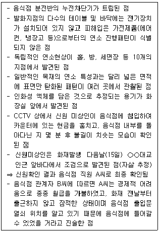
- 부주의
- 방화 의심
- 가스폭발
- 전기적 요인
(정답률: 68%)
74. 화재피해액 산정 대상에서 선박화재로 볼 수 없는 것은?
- 육상에 있는 미취항의 범선에서 발생한 화재
- 독행 기능을 가지지 않는 거룻배에서 발생한 화재
- 수리 등을 위해 육상에 일시적으로 있는 선박에서 발생한 화재
- 독행 기능을 가지는 선박에 의해 끌어진 물건에 발생한 화재
(정답률: 37%)
75. 화재조사 및 보고규정상 질문기록서를 생락할 수 있는 화재를 모두 고른 것은?
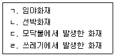
- ㄱ, ㄴ, ㄷ
- ㄱ, ㄴ, ㄹ
- ㄱ, ㄷ, ㄹ
- ㄴ, ㄷ, ㄹ
(정답률: 67%)
76. 화재조사 및 보고규정상 부대설비의 화재피해액 산정기준으로 옳은 것은?
- 건물신축단가×소실면적×설비종류별 재설비 비율×[1-(0.8×경과연수/내용연수)]
- 건물신축단가×소실면적×설비종류별 재설비 비율×[1-(0.8×경과연수/내용연수)]×손해율
- 건물신축단가×소실면적×설비종류별 재설비 비율×[1-(0.9×경과연수/내용연수)]
- 건물신축단가×소실면적×설비종류별 재설비 비율×[1-(0.9×경과연수/내용연수)]×손해율
(정답률: 60%)
77. 화재조사 및 보고규정상 화재피해액 산정기준으로 옳은 것은?
- 동물이 화재로 전부손해를 입은 경우 피해액은 시중매매가격으로 한다.
- 골동품이 전부손해를 입은 경우 피해액은 원상복구에 소요되는 비용으로 한다.
- 전부손해가 아닌 식물의 경우 피해액은 시중매매가격으로 한다.
- 임야의 입목은 최초 입목구입가격에서 소실한 입목의 잔존가격을 더한 가격으로 한다.
(정답률: 58%)
78. 화재조사 및 보고규정상 용어에 대한 정의 중 틀린 것은?
- 잔가율이란 피해물의 취득 당시 가액에 대한 현재가의 비율을 말한다.
- 내용연수란 고정자산을 경제적으로 사용할 수 있는 연수를 말한다.
- 최종잔가율이란 피해물의 경제적 내용연수가 다한 경우 잔존하는 가치의 재구입비에 대한 비율을 말한다.
- 손해율이란 피해물의 종류, 손상 상태 및 정도에 따라 피해액을 적정화시키는 일정한 비율을 말한다.
(정답률: 42%)
79. 화재조사 및 보고규정상 방화·방화의심 조사서 작성 시 기재사항이 아닌 것은? (단, 기타 참고사항은 제외한다.)
- 방화도구
- 방화피해사항
- 방화자 인적사항
- 도착 시 초기상황
(정답률: 28%)
80. 화재로 인하여 공장·창고를 제외한 건물의 천장·벽·바닥 등 내부 마감재 및 건물 내 영업시설물 등이 소실된 경우 손해율은? (단, 건물의 용도, 건물구조, 손상상태 및 정도에 따른 가감은 제외한다.)
- 10%
- 20%
- 40%
- 60%
(정답률: 34%)
5과목: 화재조사관계법규
81. 형법상 다음은 어떤 범죄에 대한 설명인가?
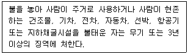
- 진화방해
- 일반물건 방화
- 일반건조물 등 방화
- 현주건조물 등 방화
(정답률: 63%)
82. 제조물책임법상 명시된 결함의 분류가 아닌 것은?
- 유통상의 결함
- 제조상의 결함
- 설계상의 결함
- 표시상의 결함
(정답률: 59%)
83. 화재조사 및 보고규정상 화재피해 범위가 건물의 6면 중 2면 이하인 경우 소실면적을 구하는 기준은?
- 바닥면적에 3분의 1을 곱한 값
- 바닥면적에 5분의 1을 곱한 값
- 피해면적의 합에 3분의 1을 곱한 값
- 피해면적의 합에 5분의 1을 곱한 값
(정답률: 50%)
84. 소방기본법령상 소방서의 화재조사전담부서에 갖추어야 할 감식용기기를 모두 고른 것은? (단, 거점소방서는 제외한다.)
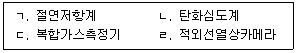
- ㄱ, ㄴ, ㄷ
- ㄱ, ㄴ, ㄹ
- ㄱ, ㄷ, ㄹ
- ㄴ, ㄷ, ㄹ
(정답률: 48%)
85. 제조물책임법에 대한 설명으로 틀린 것은?
- 제조업자는 제조물의 수입을 업으로 하는 자도 포함된다.
- 제조물책임법에 따른 손해배상책임을 배제하거나 제한하는 모든 특약은 유효하다.
- 동일한 손해에 대하여 배상할 책임이 있는 자가 2인 이상인 경우에는 연대하여 그 손해를 배상할 책임이 있다.
- 손해배상책임을 지는 자가 제조업자가 해당 제조물을 공급하지 아니하였다는 사실을 입증한 경우에는 손해배상책임을 면한다.
(정답률: 50%)
86. 화재로 인한 재해보상과 보험가입에 관한 법률 시행령상 특수건물의 기준으로 틀린 것은?
- 영화상영관으로 사용하는 부분의 바닥면적의 합계가 1000m2 이상인 건물
- 일반음식점영업으로 사용하는 부분의 바닥면적의 합계가 2000m2 이상인 건물
- 목욕장업으로 사용하는 부분의 바닥면적의 합계가 2000m2 이상인 건물
- 병원급 의료기관으로 사용하는 건물로서 연면적의 합계가 3000m2 이상인 건물
(정답률: 51%)
87. 형법상 공용건조물 등 방화에 관한 사항으로 ( )에 알맞은 기준은?
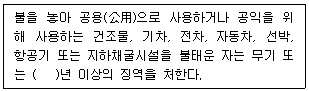
- 1
- 3
- 5
- 7
(정답률: 51%)
88. 화재조사 및 보고규정상 건물의 동수 산정 기준으로 옳은 것은?
- 구조에 관계없이 지붕 및 실이 하나로 연결되어 있는 것은 같은 동으로 본다.
- 건널 복도 등으로 2이상의 동에 연결되어 있는 것은 같은 동으로 본다.
- 내화조 건물의 경우 격벽으로 방화구획이 되어 있는 경우는 각 동으로 한다.
- 독립된 건물과 건물 사이에 차광막, 비막이 등의 덮개를 설치하고 그 밑을 통로로 사용하는 경우에는 같은 동으로 한다.
(정답률: 56%)
89. 화재로 인한 재해보상과 보험가입에 관한 법률상 다음의 경우 벌금 기준은? (단, 산업재해보상보험법에 관한 사항은 제외한다.)
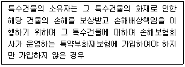
- 100만원 이하의 벌금
- 400만원 이하의 벌금
- 500만원 이하의 벌금
- 700만원 이하의 벌금
(정답률: 61%)
90. 민법상 불법행위에 관한 사항으로 틀린 것은?
- 고의 또는 과실로 인한 위법행위로 타인에게 손해를 가한 자는 그 손해를 배상할 책임이 있다.
- 타인에게 정신상고통을 가한 자는 재산 이외의 손해에 대하여도 배상할 책임이 있다.
- 미성년자가 타인에게 손해를 가한 경우에 그 행위의 책임을 변식할 지능이 없는 때에는 배상의 책임이 없다.
- 타인의 생명을 해한 자는 피해자의 직계존속, 직계비속 및 배우자에 대하여는 재산상의 손해가 없는 경우에는 손해배상의 책임이 없다.
(정답률: 58%)
91. 소방기본법령상 화재가 발생하였을 때 화재 원인과 피해 등에 대한 조사를 실시하는 시기로 옳은 것은?
- 화재진압 완료 후 실시
- 소방청장의 허가를 득한 후 실시
- 화재조사자가 임의로 정하는 시기에 실시
- 관계 공무원이 화재사실을 인지하는 즉시 실시
(정답률: 69%)
92. 화재조사 및 보고규정상 화재조사 전담부서 설치에 관한 내용으로 틀린 것은?
- 화재조사관은 그 직무를 이용하여 관계자의 민사분쟁에 적극적으로 개입하여야 한다.
- 화재조사의 정확성을 기하기 위하여 원인조사와 피해조사로 구분하여 조사하고 보조요원을 지정 운영하여야 한다.
- 소방학교장은 화재조사 전문가 육성과 화재원인 등을 조사·연구할 부서를 설치 운영한다.
- 화재조사의 원인감식과 피해조사의 전문화와 업무 발전을 위하여 소방본부와 소방서에 화재조사 전담부서를 설치 운영한다.
(정답률: 70%)
93. 소방기본법령상 화재조사에 관한 전문교육 과정의 교육과목 중 전문교육에 해당하는 과목이 아닌 것은?
- 기초화학
- 심리상담기법
- 범죄심리학
- 소방시설조사
(정답률: 57%)
94. 과도한 문어발식 콘센트 사용으로 발생한 전기화재로 인하여, 구입한 지 5년 된 세탁기가 소손되었다. 이 소손에 대하여 제조물책임법령상 손해배상책임에 관한 설명으로 옳은 것은?
- 세탁기 제조상 결함으로 손해배상책임은 세탁기 제조사가 부담한다.
- 세탁기 소유자의 사용상 문제로 손해배상책임은 발생하지 않는다.
- 세탁기 설계상 결함으로 손해배상책임은 세탁기 설계자가 부담한다.
- 세탁기 유통상 결함으로 손해배상책임은 제품 유통 업체에서 부담한다.
(정답률: 68%)
95. 실화책임에 관한 법률에 관한 내용으로 틀린 것은?
- 손해배상액의 경감 청구가 있을 경우 화재의 원인을 고려하여 손해배상액을 경감할 수 있다.
- 실화가 중대한 과실로 인한 것이 아닌 경우 그로 인한 손해의 배상의무자는 법원에 손해배상액의 경감을 청구할 수 없다.
- 실화로 인하여 화재가 발생한 경우 연소(延燒)로 인한 부분에 대한 손해배상청구에 한하여 적용한다.
- 실화(失火)의 특수성을 고려하여 실화자에게 중대한 과실이 없는 경우 그 손해배상액의 경감(輕減)에 관한 「민법」 제765조의 특례를 정함을 목적으로 한다.
(정답률: 61%)
96. 소방기본법령상 화재조사를 하는 관계공무원이 화재조사를 수행하면서 알게 된 비밀을 다른 사람에게 누설한 경우 벌금 기준은?
- 100만원 이하의 벌금
- 200만원 이하의 벌금
- 300만원 이하의 벌금
- 500만원 이하의 벌금
(정답률: 56%)
97. 민법상 손해배상청구권의 소멸시효에 관한 사항으로 ( )에 알맞은 기준은?
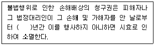
- 1
- 2
- 3
- 4
(정답률: 68%)
98. 소방기본법령상 소방공무원과 경찰공무원의 협력에 관한 사항으로 ( )에 알맞은 내용은?
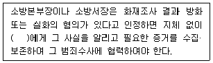
- 시·도지사
- 관할 구청장
- 관할 검찰지청
- 관할 경찰서장
(정답률: 71%)
99. 화재조사 및 보고규정상 다음에서 설명하는 용어는?
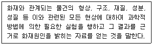
- 감식
- 조사
- 감정
- 동력원
(정답률: 58%)
100. 화재로 인한 재해보상과 보험가입에 관한 법률상 보험가입에 관한 사항으로 틀린 것은?
- 특수건물의 소유자는 특약부화재보험에 관한 계약을 매년 갱신하여야 한다.
- 손해보험회사는 특약부화재보험 계약의 체결을 거절할 수 있다.
- 특수건물의 소유자는 특약부화재보험에 부가하여 풍재(風災) 등으로 인한 손해를 담보하는 보험에 가입할 수 있다.
- 특수건물의 소유권이 변경된 경우 특수건물의 소유자는 그 건물의 소유권을 취득한 날부터 30일 이내에 특약부화재보험에 가입하여야 한다.
(정답률: 60%)